Bucătărie în L, alb mat cu blat deschis
Corpuri pe două laturi, cuptor și microunde încastrate la înălțimea ochilor — nu te mai apleci.
Vreau așa — scrie-neProiecte care se fac astăzi în lume — și pe care ți le putem produce și noi, la comandă, pe dimensiunile casei tale. Alege ce-ți place și scrie-ne: îți spunem ce se poate, cum se face și cât costă.
Corpuri pe două laturi, cuptor și microunde încastrate la înălțimea ochilor — nu te mai apleci.
Vreau așa — scrie-ne
Insula adaugă blat de lucru și depozitare fără să blocheze trecerea.
Vreau așa — scrie-ne
Contrastul alb–nuc–negru, cel mai cerut în apartamentele noi.
Vreau așa — scrie-ne
Toate electrocasnicele într-o coloană: blatul de lucru rămâne complet liber.
Vreau așa — scrie-ne
Poliță de lemn în locul corpurilor suspendate pe o latură — camera respiră.
Vreau așa — scrie-ne
Frigiderul dispare în corp, linia fronturilor rămâne neîntreruptă.
Vreau așa — scrie-ne
Barul desparte bucătăria de living fără să ridici perete.
Vreau așa — scrie-ne
Banda LED sub corpurile de sus luminează exact unde tai.
Vreau așa — scrie-ne
Fronturi cu ramă, pentru cine nu vrea linie modernă.
Vreau așa — scrie-ne
Blatul negru mat se curăță ușor și nu arată praful.
Vreau așa — scrie-ne
Lemn pe toată suprafața, hota integrată — nimic nu iese din linie.
Vreau așa — scrie-ne
Colțul rotunjit al insulei: trecere mai ușoară în bucătării înguste.
Vreau așa — scrie-ne
Nișele din perete, cu lumină, țin lucrurile la vedere fără rafturi în plus.
Vreau așa — scrie-ne
Bucătăria și biblioteca livingului fac un singur corp continuu.
Vreau așa — scrie-ne
Soluție pentru garsonieră: tot ce trebuie pe doi metri de perete.
Vreau așa — scrie-ne
Lemn cald cu blat negru și masă rotundă în colț.
Vreau așa — scrie-ne
Masa de toaletă croită în același corp cu dulapul.
Vreau așa — scrie-ne
Peretele de lemn ascunde dulapul, biroul iese din același corp.
Vreau așa — scrie-ne
Dulap alb pe tot peretele, cu birou încastrat la capăt.
Vreau așa — scrie-ne
Un singur corp jos, pe toată lungimea — depozitare fără să încarce camera.
Vreau așa — scrie-ne
Panou de lemn în spatele patului, corpuri negre mate pe lateral.
Vreau așa — scrie-ne
Tăblie tapițată lată, care ține loc și de tăblie, și de perete decorativ.
Vreau așa — scrie-ne
Comodă joasă și oglindă înaltă — camera pare dublă.
Vreau așa — scrie-ne
Fronturi de lemn pe toată înălțimea camerei — fără spațiu de praf deasupra și cu depozitare dublă.
Vreau așa — scrie-ne
Combinația care se cere cel mai des acum: corp închis la culoare, blat și accente de lemn.
Vreau așa — scrie-ne
Deschidere prin apăsare, fără mânere vizibile. Linia rămâne continuă pe tot peretele.
Vreau așa — scrie-ne
Alb lucios reflectă lumina și face bucătăria mică să pară dublă.
Vreau așa — scrie-ne
Corpuri de sus până în tavan, insulă cu depozitare pe ambele fețe.
Vreau așa — scrie-ne
Bucătăria și masa fac un singur corp — soluție pentru spații deschise.
Vreau așa — scrie-ne
Cel mai vândut contrast: corp alb mat, blat și poliță de lemn.
Vreau așa — scrie-ne
Bucătărie pe un singur perete — potrivită pentru apartamente de două camere.
Vreau așa — scrie-ne
Fronturi de lemn deschis și corpuri gri, cu electrocasnice încastrate.
Vreau așa — scrie-ne
Fără mânere, fără linii — totul se citește ca o singură suprafață.
Vreau așa — scrie-ne
Rafturi deschise peste blat, în loc de corpuri suspendate.
Vreau așa — scrie-ne
Culoarea închisă jos, deschisă sus — face camera să pară mai înaltă.
Vreau așa — scrie-ne
Bandă LED pe fiecare raft: vezi ce ai fără să aprinzi lumina mare.
Vreau așa — scrie-ne
Structură închisă la culoare, rafturi contrastante — se murdărește greu, se vede bine.
Vreau așa — scrie-ne
Panoul lamelar în spate ridică o cameră de depozitare la nivel de cameră de arătat.
Vreau așa — scrie-ne

Camera mică transformată în dressing complet, cu bancă la mijloc.
Vreau așa — scrie-ne
Ușile de sticlă țin praful afară și lasă hainele la vedere.
Vreau așa — scrie-ne

Alb, sertare la mijloc, bare pe două niveluri — cel mai cerut model.
Vreau așa — scrie-ne

Insula cu sertare la mijlocul camerei — pentru ceasuri, bijuterii, ochelari.
Vreau așa — scrie-ne
Puntea peste pat: depozitare unde altfel era perete gol. O facem des.
Vreau așa — scrie-ne
Aceeași punte, cu nișă pentru televizor și noptiere integrate.
Vreau așa — scrie-ne
Tăblia și peretele fac un corp — se montează pe orice lățime.
Vreau așa — scrie-ne
Când nu ai cameră separată, dressingul intră în dormitor.
Vreau așa — scrie-ne
Corp jos pe toată lungimea: depozitare fără să blocheze lumina.
Vreau așa — scrie-ne
Tăblie moale, consolă pe perete în loc de noptiere.
Vreau așa — scrie-ne
Pentru camera de copil: dulap, birou și rafturi croite împreună.
Vreau așa — scrie-ne

Pe toată lungimea și până în tavan — depozitare maximă, aspect de perete.
Vreau așa — scrie-ne
Bare, rafturi, sertare și suport de pantofi — organizarea dinăuntru.
Vreau așa — scrie-ne
Rafturi care par că plutesc, corp jos închis pentru ce nu vrei la vedere.
Vreau așa — scrie-ne
Comoda ridicată de la podea — se curăță ușor, camera pare mai mare.
Vreau așa — scrie-ne
De la podea până în tavan, croită pe milimetru pe peretele tău.
Vreau așa — scrie-ne
Rafturi de adâncimi diferite, pentru cărți și obiecte deopotrivă.
Vreau așa — scrie-ne

Metal și lemn, pentru un living cu personalitate.
Vreau așa — scrie-ne
Panoul ascunde cablurile și încălzește camera.
Vreau așa — scrie-ne
Puțin, dar exact unde trebuie — pentru cine nu vrea mobilă multă.
Vreau așa — scrie-ne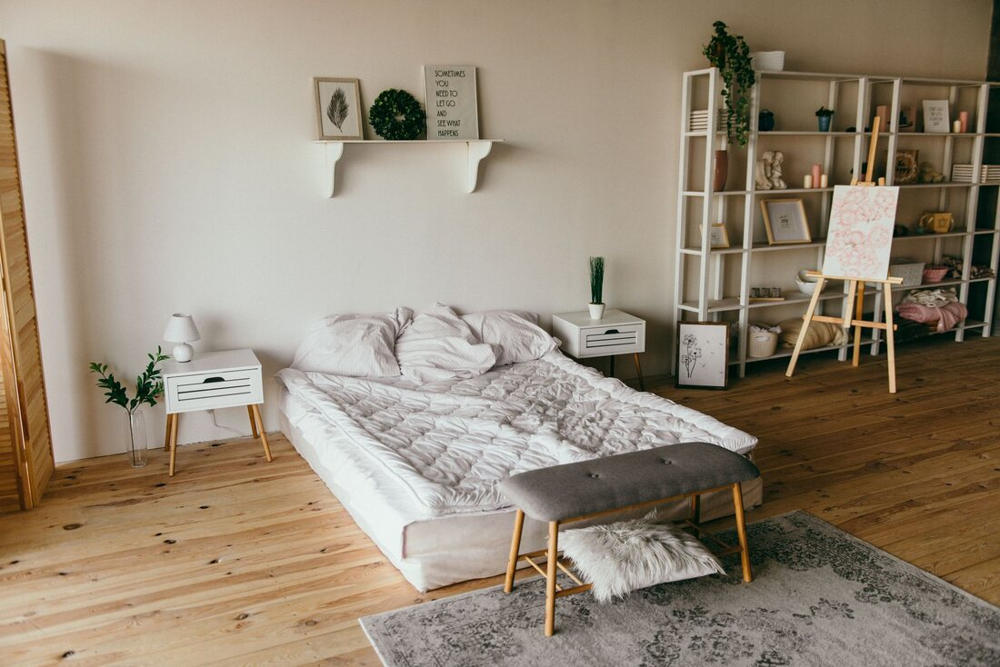
Noptierele cu un sertar, pe picioare de lemn, lasă podeaua liberă și fac loc pentru telefon și veioză.
Foto: Dmitry Zvolskiy · vezi mai multe pe Pexels ↗ Vreau așa — scrie-ne
Corpurile duse până la tavan nu lasă loc de praf deasupra și câștigă un rând întreg de depozitare.
Foto: Max Vakhtbovych · vezi mai multe pe Pexels ↗ Vreau așa — scrie-ne
Peretele de lemn cu nișe colorate și comoda lungă de dedesubt adună televizorul și decorul într-un corp.
Foto: Max Vakhtbovych · vezi mai multe pe Pexels ↗ Vreau așa — scrie-ne
Dulapul pe tot peretele, fără mânere, ține tot și se pierde în alb; comoda joasă leagă camera.
Foto: Max Vakhtbovych · vezi mai multe pe Pexels ↗ Vreau așa — scrie-ne
Bare de umerașe pe ambele laturi și rafturi la capăt: totul la vedere, acces în două secunde.
Foto: Max Vakhtbovych · vezi mai multe pe Pexels ↗ Vreau așa — scrie-ne
Comoda cu sertare și masa din același stejar adună la un loc depozitarea și locul de lucru.
Foto: Max Vakhtbovych · vezi mai multe pe Pexels ↗ Vreau așa — scrie-ne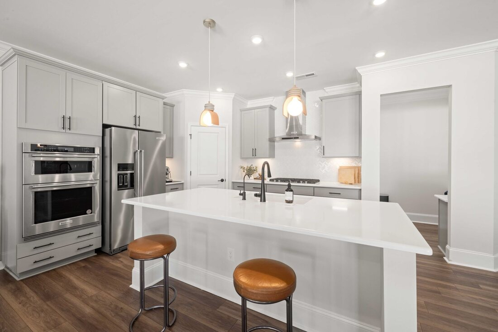
Insula cu chiuvetă adaugă blat de lucru și loc pentru două scaune, fără să blocheze trecerea.
Foto: Curtis Adams · vezi mai multe pe Pexels ↗ Vreau așa — scrie-ne
Comoda joasă cu sertare ține cablurile și routerul la îndemână, sub televizorul fixat pe perete.
Foto: Max Vakhtbovych · vezi mai multe pe Pexels ↗ Vreau așa — scrie-ne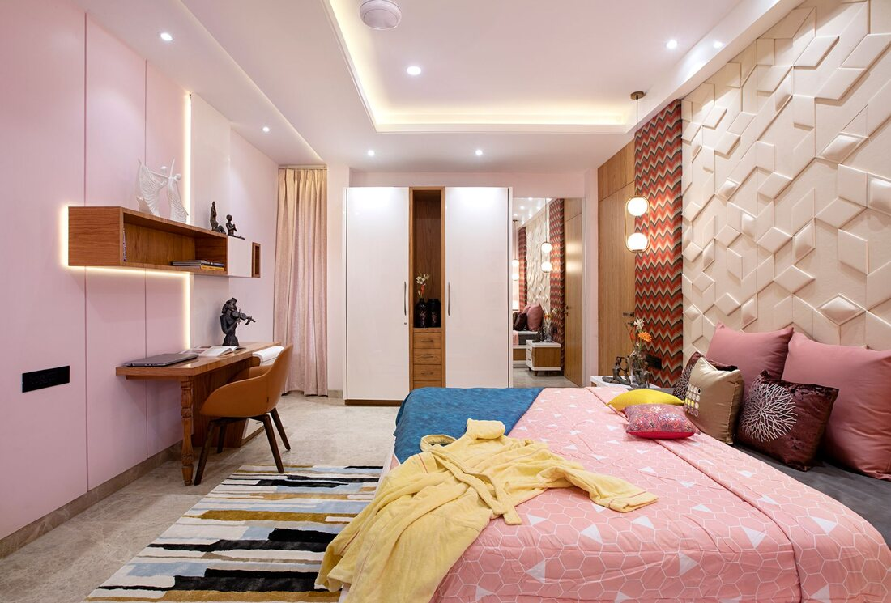
Biroul prins de perete și polița cu LED de deasupra lasă podeaua liberă și fac loc de lucru în dormitor.
Foto: rishi raj khare · vezi mai multe pe Pexels ↗ Vreau așa — scrie-ne
Coloanele înalte țin cuptorul la nivelul ochilor, iar insula adaugă blat de lucru în mijlocul camerei.
Foto: Max Vakhtbovych · vezi mai multe pe Pexels ↗ Vreau așa — scrie-ne
Coloanele înalte adună cuptoarele și cămara pe un singur perete, iar restul bucătăriei rămâne aerisit.
Foto: Max Vakhtbovych · vezi mai multe pe Pexels ↗ Vreau așa — scrie-ne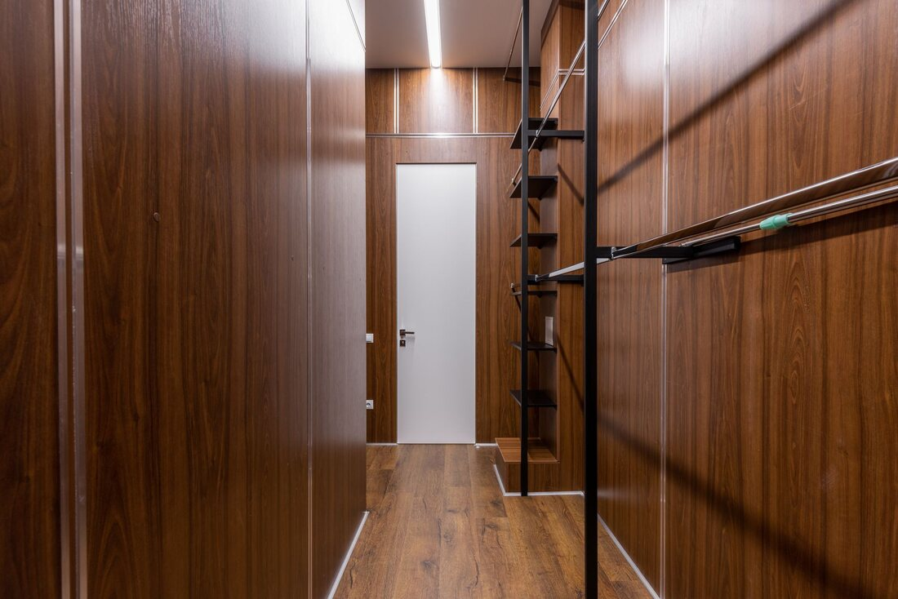
Un hol îngust devine dressing când barele și polițele stau pe o singură latură.
Foto: Max Vakhtbovych · vezi mai multe pe Pexels ↗ Vreau așa — scrie-ne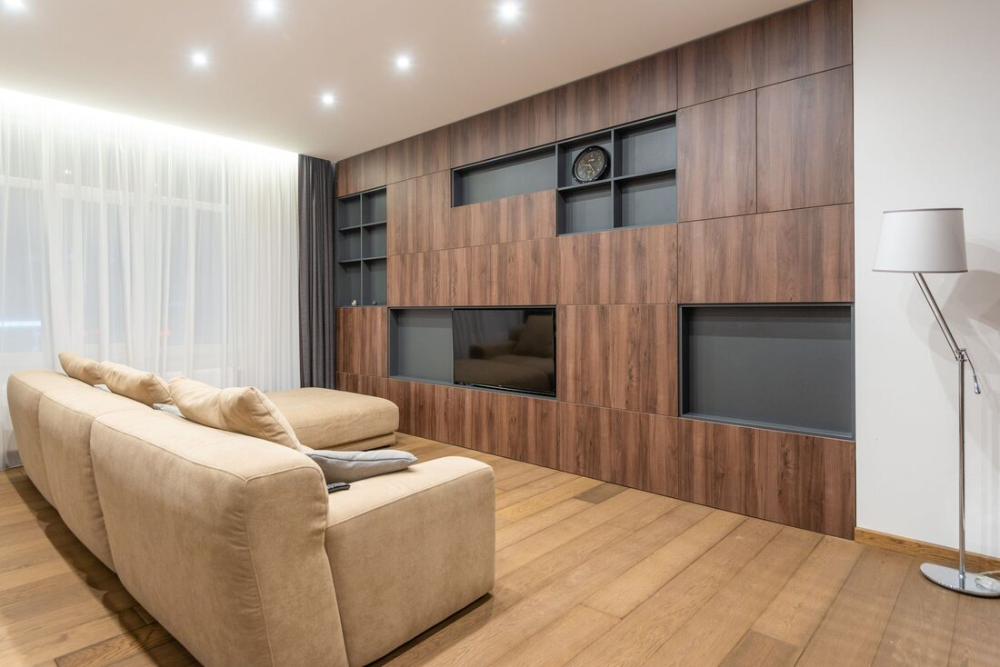
Un perete întreg de dulapuri ascunde cablurile și lasă deschise doar nișele pentru decor.
Foto: Max Vakhtbovych · vezi mai multe pe Pexels ↗ Vreau așa — scrie-ne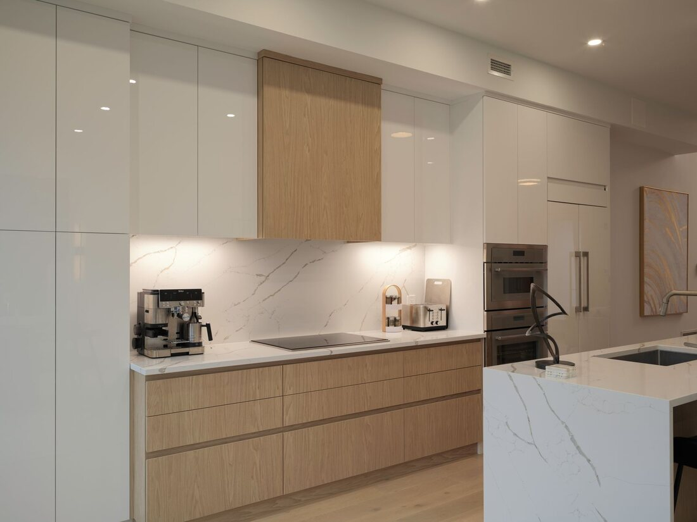
Sertarele late de jos se trag complet și arată tot conținutul, fără să cauți în fundul dulapului.
Foto: Ali Soheil · vezi mai multe pe Pexels ↗ Vreau așa — scrie-ne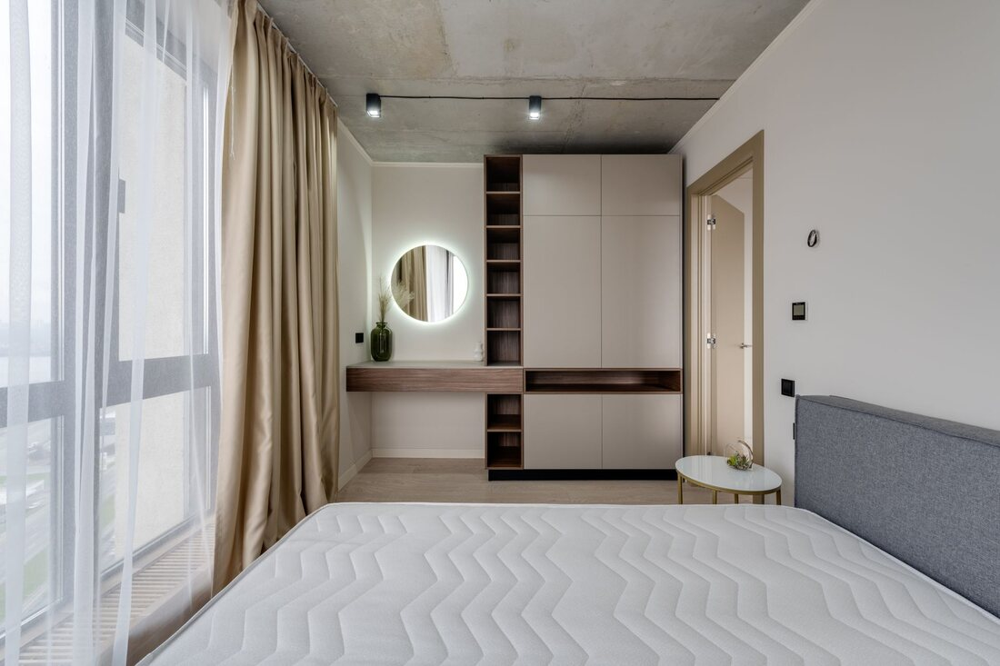
Dulapul, rafturile deschise și masa de toaletă cu oglindă fac un singur corp pe tot peretele.
Foto: Max Vakhtbovych · vezi mai multe pe Pexels ↗ Vreau așa — scrie-ne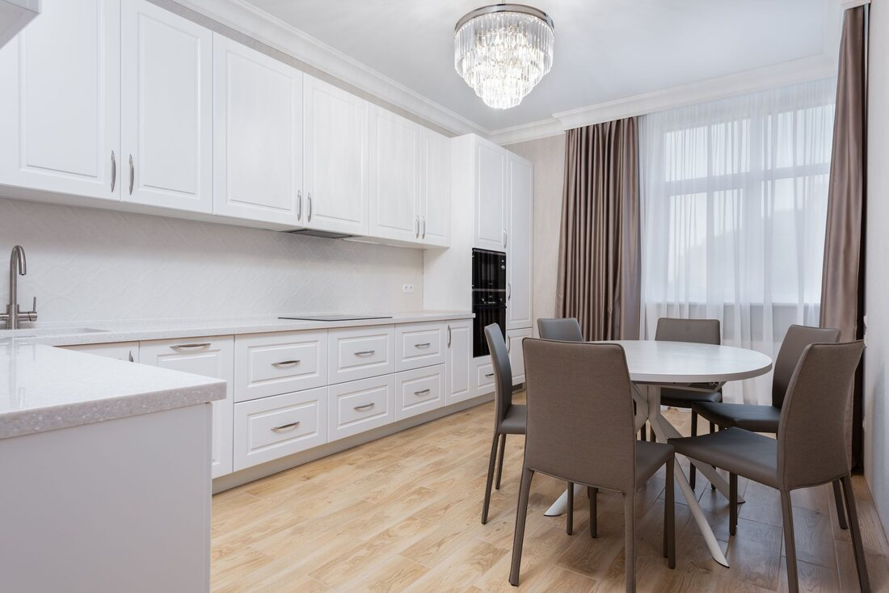
Pe un singur perete încap plita, chiuveta și cuptorul încastrat, iar restul camerei rămâne pentru masă.
Foto: Max Vakhtbovych · vezi mai multe pe Pexels ↗ Vreau așa — scrie-ne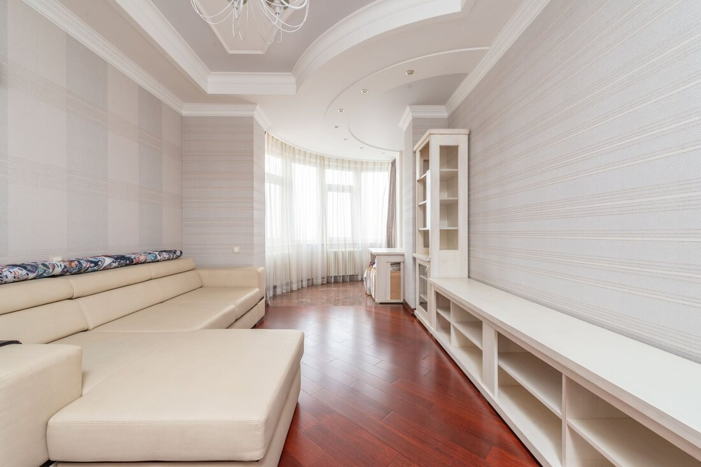
Rafturile joase pe toată lungimea peretelui țin cărți și cutii, iar deasupra rămâne loc liber.
Foto: Max Vakhtbovych · vezi mai multe pe Pexels ↗ Vreau așa — scrie-ne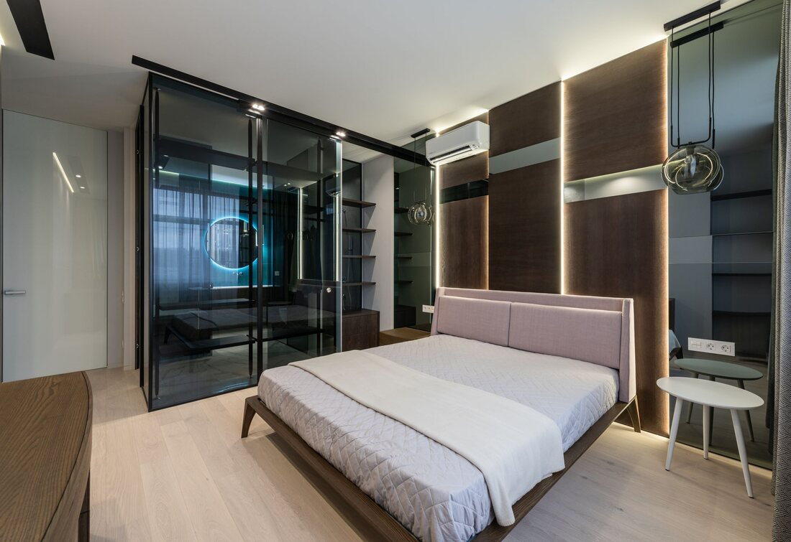
Panourile de lemn cu nișe luminate de LED dau lumină caldă, indirectă, la capul patului.
Foto: Max Vakhtbovych · vezi mai multe pe Pexels ↗ Vreau așa — scrie-ne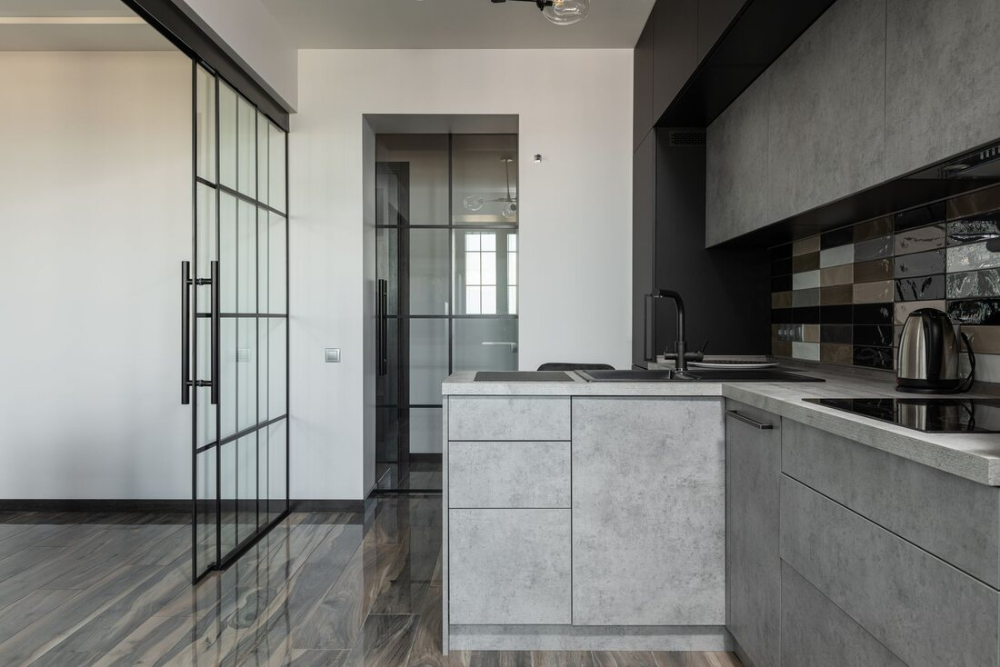
Peninsula separă gătitul de restul casei și adaugă sertare, fără un perete în plus.
Foto: Max Vakhtbovych · vezi mai multe pe Pexels ↗ Vreau așa — scrie-ne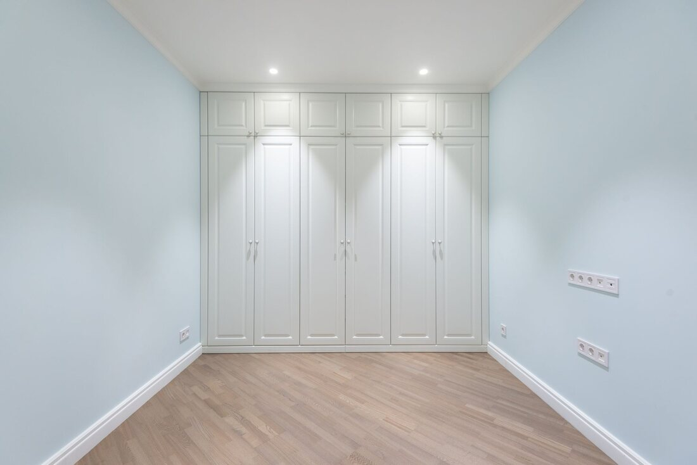
Dulapul pe tot peretele, cu corpuri deasupra până la tavan, nu lasă spațiu pierdut.
Foto: Max Vakhtbovych · vezi mai multe pe Pexels ↗ Vreau așa — scrie-ne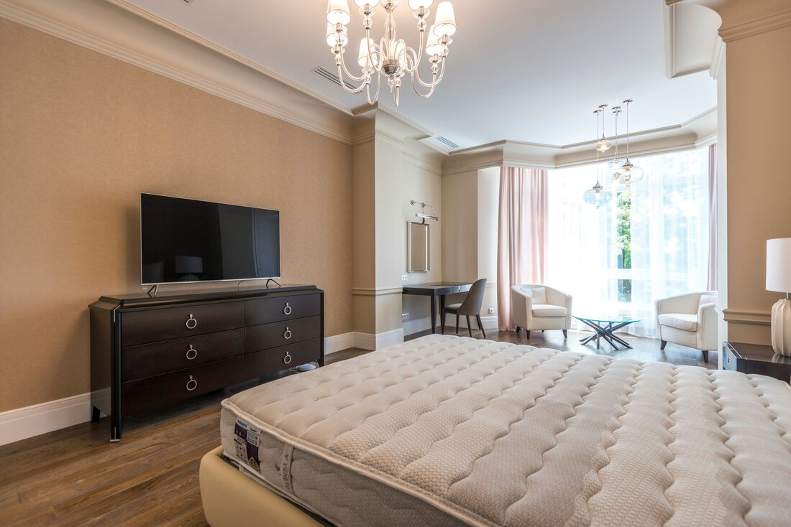
Comoda lungă cu sertare ține lucrurile mărunte și servește și drept suport pentru televizor.
Foto: Max Vakhtbovych · vezi mai multe pe Pexels ↗ Vreau așa — scrie-ne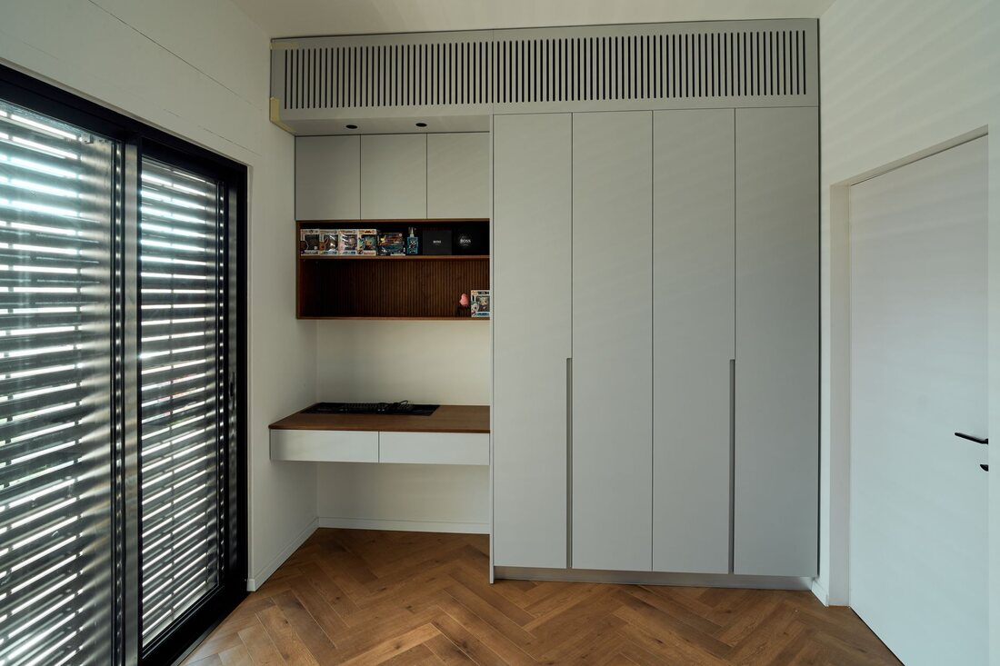
Dulapul și biroul în același corp: folosești tot peretele, iar mânerele profil nu ies în cale.
Foto: FMC Furniture manufacturer Chalin · vezi mai multe pe Pexels ↗ Vreau așa — scrie-ne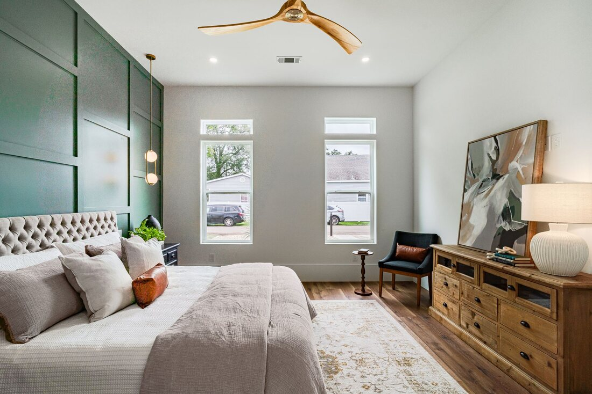
O comodă lată cu multe sertare ține hainele mărunte și servește și ca suprafață pentru decor.
Foto: Chad Populis · vezi mai multe pe Pexels ↗ Vreau așa — scrie-ne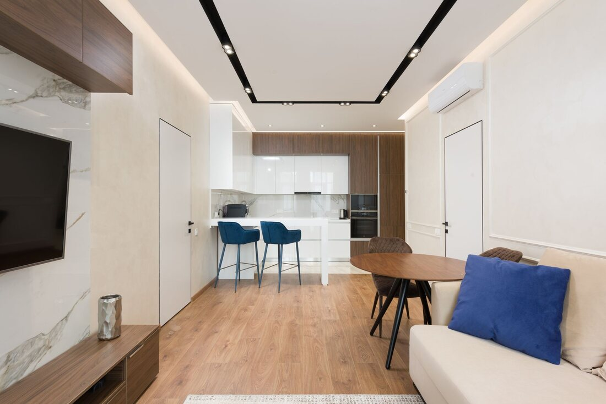
Bucătăria de la capătul camerei, cu bar pentru scaune înalte, se leagă de living fără perete despărțitor.
Foto: Max Vakhtbovych · vezi mai multe pe Pexels ↗ Vreau așa — scrie-ne
Polițele de lângă dulap, din același stejar ca rama, leagă corpul de perete fără să-l încarce.
Foto: Max Vakhtbovych · vezi mai multe pe Pexels ↗ Vreau așa — scrie-ne
Ușile glisante din sticlă mată lasă lumina să treacă și ascund ordinea de zi cu zi.
Foto: Max Vakhtbovych · vezi mai multe pe Pexels ↗ Vreau așa — scrie-ne
Pe un singur perete, bucătăria lasă loc pentru masă rotundă și canapea în același spațiu.
Foto: Max Vakhtbovych · vezi mai multe pe Pexels ↗ Vreau așa — scrie-ne
Pe doi pereți, de la podea la tavan, dulapurile țin cât un dressing fără să pierzi camera.
Foto: Max Vakhtbovych · vezi mai multe pe Pexels ↗ Vreau așa — scrie-ne
Nișele laterale cu ramă aurie și lumină încadrează televizorul și țin obiectele la vedere.
Foto: Ansar Muhammad · vezi mai multe pe Pexels ↗ Vreau așa — scrie-ne
Corpurile suspendate de o parte și de alta a hotei încadrează plita și țin condimentele aproape.
Foto: Curtis Adams · vezi mai multe pe Pexels ↗ Vreau așa — scrie-ne
Rama din jurul televizorului și polițele de dedesubt adună aparatele într-un singur loc.
Foto: Max Vakhtbovych · vezi mai multe pe Pexels ↗ Vreau așa — scrie-ne
Dulapul încastrat la capăt și comoda TV joasă lasă liber mijlocul camerei înguste.
Foto: Max Vakhtbovych · vezi mai multe pe Pexels ↗ Vreau așa — scrie-ne
Frigiderul și cuptoarele intră în coloane până sus, iar insula lungă ține loc și de bar.
Foto: Max Vakhtbovych · vezi mai multe pe Pexels ↗ Vreau așa — scrie-ne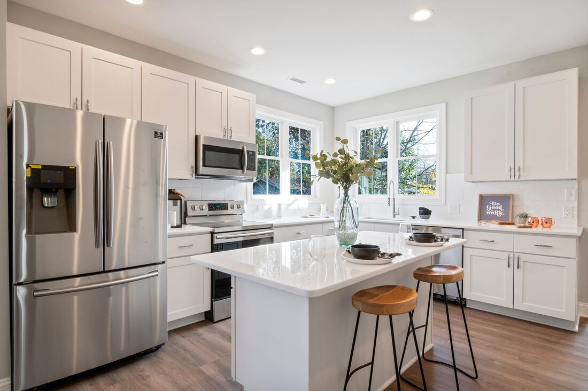
Ușile cu ramă dau un aer clasic, iar insula aduce blat liber de lucru în mijlocul camerei.
Foto: Curtis Adams · vezi mai multe pe Pexels ↗ Vreau așa — scrie-ne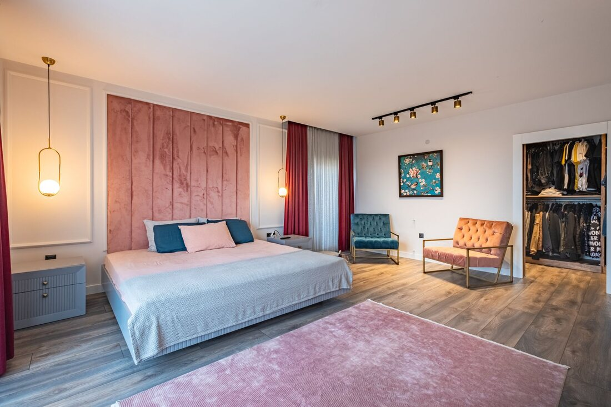
Tăblia tapițată până aproape de tavan dă greutate patului, iar dressingul deschis rămâne la un pas.
Foto: Furkan Tumer · vezi mai multe pe Pexels ↗ Vreau așa — scrie-ne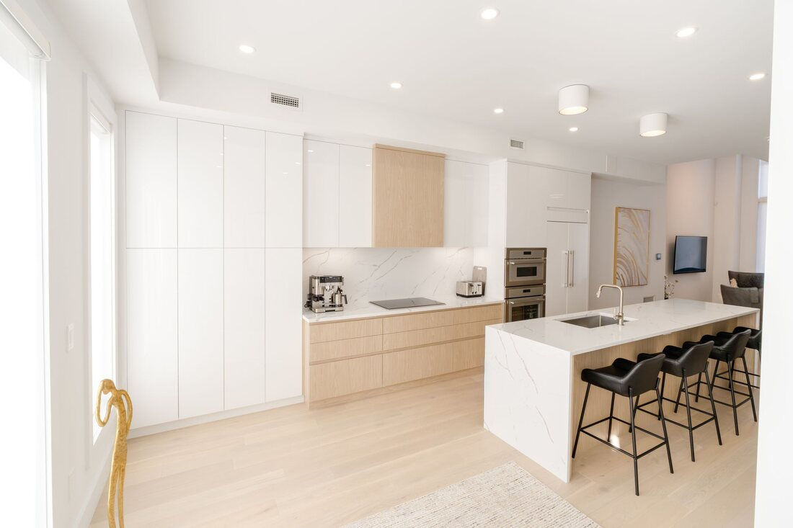
Coloanele înalte țin cămara și electrocasnicele, iar insula cu patru scaune devine bar.
Foto: Ali Soheil · vezi mai multe pe Pexels ↗ Vreau așa — scrie-ne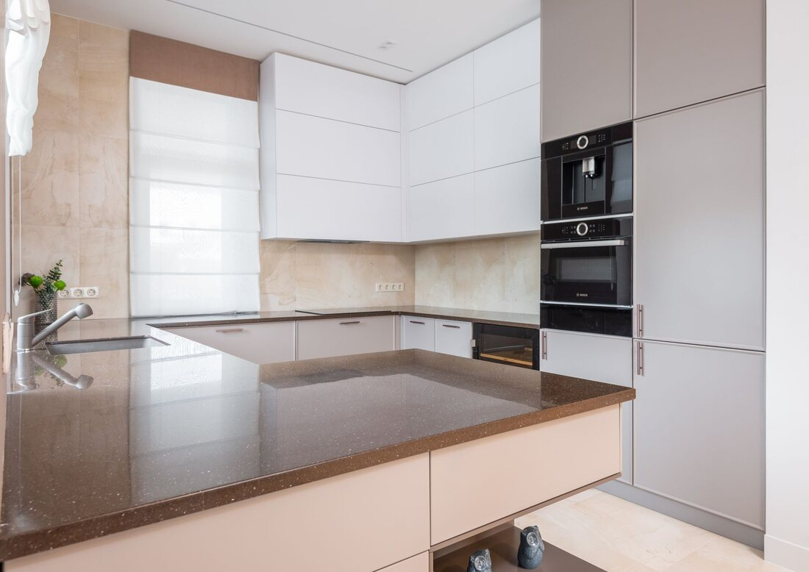
Forma în U pune totul la un pas, iar electrocasnicele încastrate în coloană eliberează blatul.
Foto: Max Vakhtbovych · vezi mai multe pe Pexels ↗ Vreau așa — scrie-ne
Placarea din lemn până la tavan ține loc de tăblie și încălzește o cameră altfel complet albă.
Foto: Max Vakhtbovych · vezi mai multe pe Pexels ↗ Vreau așa — scrie-ne
O nișă cu bare și polițe, închisă cu draperie, ține loc de dulap unde ușile n-ar avea loc.
Foto: Max Vakhtbovych · vezi mai multe pe Pexels ↗ Vreau așa — scrie-ne
Nișele de lângă șemineu devin biblioteci cu uși jos: decorul sus, mărunțișurile ascunse.
Foto: Curtis Adams · vezi mai multe pe Pexels ↗ Vreau așa — scrie-ne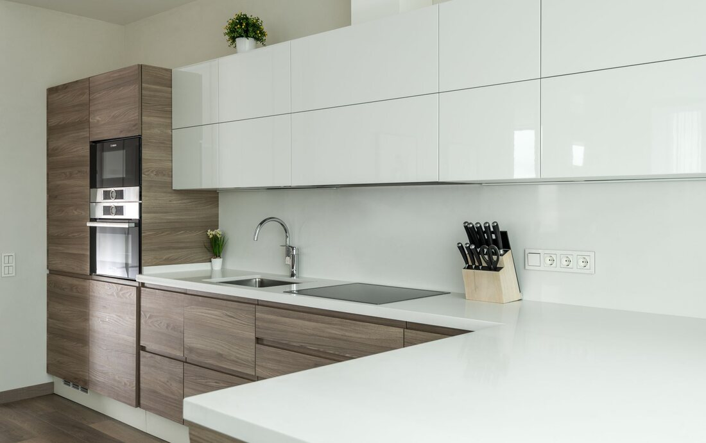
Coloana cu cuptor și microunde la înălțimea ochilor scutește spatele, iar blatul în L lasă loc de lucru.
Foto: Max Vakhtbovych · vezi mai multe pe Pexels ↗ Vreau așa — scrie-ne
LED-ul de sub fiecare raft luminează hainele direct, iar sertarele din mijloc țin mărunțișurile.
Foto: Max Vakhtbovych · vezi mai multe pe Pexels ↗ Vreau așa — scrie-ne
Comoda suspendată lasă podeaua liberă, iar patul pe podest, după perdea, separă dormitul de living.
Foto: Max Vakhtbovych · vezi mai multe pe Pexels ↗ Vreau așa — scrie-ne
Pat, birou și rafturi joase în aceeași culoare: copilul ajunge singur la jucării și cărți.
Foto: Max Vakhtbovych · vezi mai multe pe Pexels ↗ Vreau așa — scrie-ne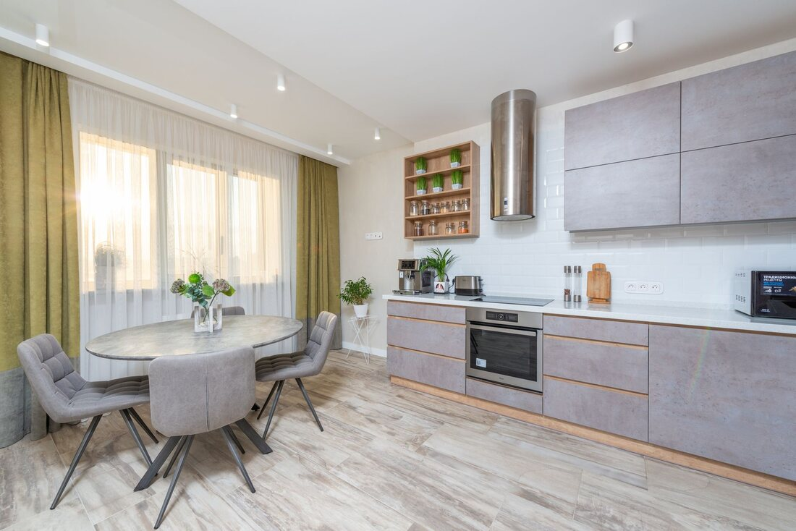
Pe un singur perete: corpuri sus și jos, cuptor sub plită, iar restul camerei rămâne pentru masă.
Foto: Max Vakhtbovych · vezi mai multe pe Pexels ↗ Vreau așa — scrie-ne
Ușile cu ramă subțire și mânerele lungi fac ca dulapul încastrat să pară parte din perete.
Foto: Max Vakhtbovych · vezi mai multe pe Pexels ↗ Vreau așa — scrie-ne
Ușile glisante nu cer spațiu de deschidere, iar suprafața lucioasă reflectă lumina în cameră.
Foto: Max Vakhtbovych · vezi mai multe pe Pexels ↗ Vreau așa — scrie-ne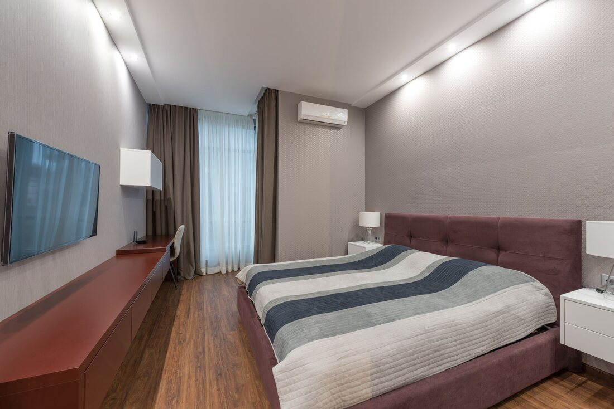
O consolă lungă pe tot peretele face din birou și suport TV o singură piesă.
Foto: Max Vakhtbovych · vezi mai multe pe Pexels ↗ Vreau așa — scrie-ne
Ușile cu ramă din MDF vopsit dau aer clasic, iar LED-ul de sub corpuri luminează blatul.
Foto: Max Vakhtbovych · vezi mai multe pe Pexels ↗ Vreau așa — scrie-ne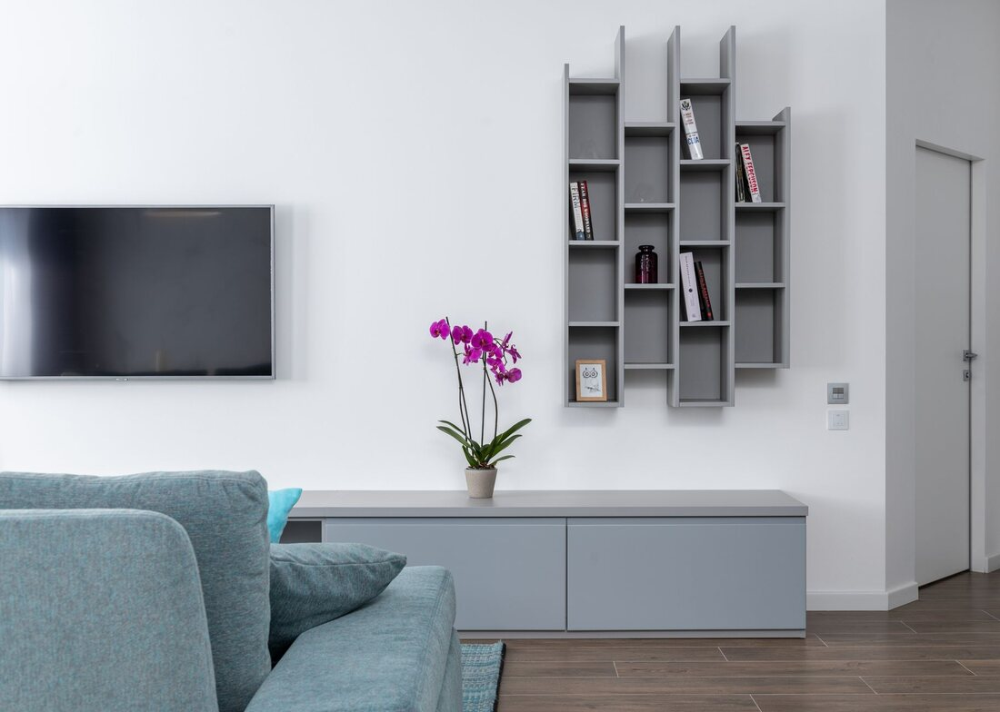
Raftul de perete în trepte ține cărțile la vedere fără să ocupe podeaua.
Foto: Max Vakhtbovych · vezi mai multe pe Pexels ↗ Vreau așa — scrie-ne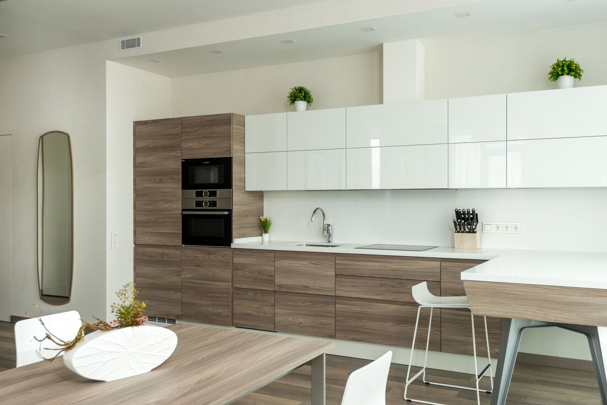
Pe un singur perete încap coloana cu cuptoare, chiuveta și plita; barul alb ține loc de masă rapidă.
Foto: Max Vakhtbovych · vezi mai multe pe Pexels ↗ Vreau așa — scrie-ne
Comoda joasă lucioasă de la intrare ține mărunțișurile și servește drept suport pentru o veioză.
Foto: Max Vakhtbovych · vezi mai multe pe Pexels ↗ Vreau așa — scrie-ne
Comoda joasă cu sertare late ține lenjeria la îndemână și e și suprafață pentru decor.
Foto: Max Vakhtbovych · vezi mai multe pe Pexels ↗ Vreau așa — scrie-ne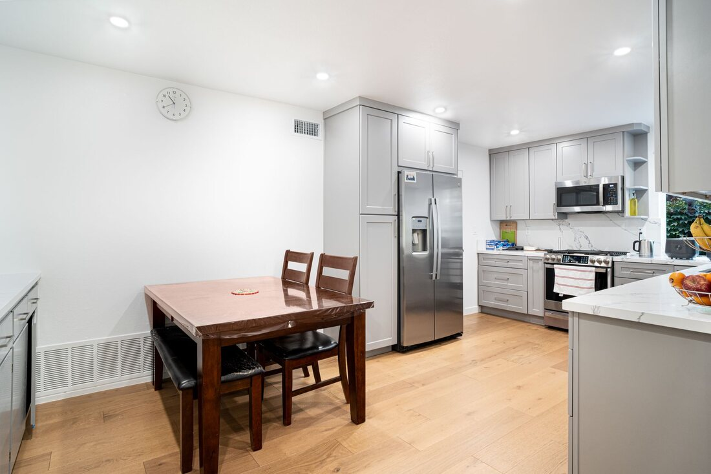
Coloana-cămară de lângă frigider ține proviziile la îndemână, fără să încarce blatul.
Foto: The R.E Editor · vezi mai multe pe Pexels ↗ Vreau așa — scrie-ne
Insula cu chiuvetă desparte zona de gătit de cea de masă și adaugă sertare pe toată lungimea.
Foto: Curtis Adams · vezi mai multe pe Pexels ↗ Vreau așa — scrie-ne
Dressingul deschis, separat prin sticlă, ține hainele la vedere fără să încarce dormitorul.
Foto: Huy Quang Nguyễn · vezi mai multe pe Pexels ↗ Vreau așa — scrie-ne
Sub geam, o banchetă cu nișe dedesubt face loc de citit și de depozitare în același corp.
Foto: Curtis Adams · vezi mai multe pe Pexels ↗ Vreau așa — scrie-ne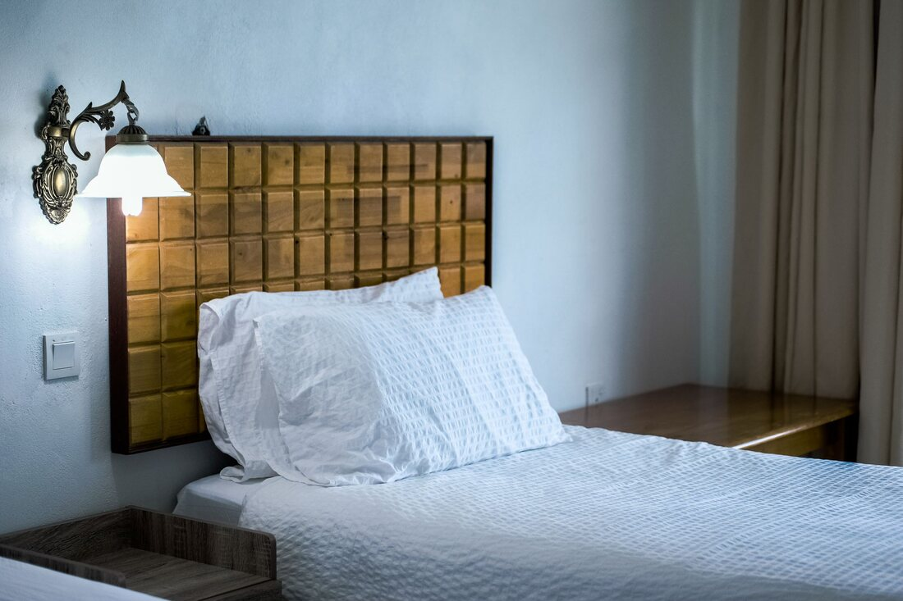
O tăblie de lemn fixată pe perete protejează zugrăveala și dă patului un aer cald.
Foto: Donald Tong · vezi mai multe pe Pexels ↗ Vreau așa — scrie-ne
Cuptorul cu microunde încastrat în coloană eliberează blatul, care rămâne întreg pentru lucru.
Foto: Waqas ilyas · vezi mai multe pe Pexels ↗ Vreau așa — scrie-ne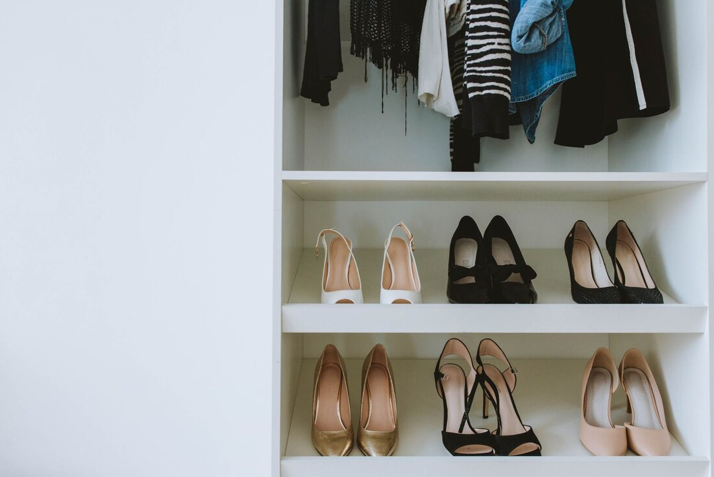
Rafturile joase de sub bară țin pantofii la vedere, perechi aliniate, fără cutii.
Foto: Anastasia Shuraeva · vezi mai multe pe Pexels ↗ Vreau așa — scrie-ne
Comoda TV suspendată pe tot peretele și consola din spatele canapelei dau suprafețe fără să încarce camera.
Foto: Max Vakhtbovych · vezi mai multe pe Pexels ↗ Vreau așa — scrie-ne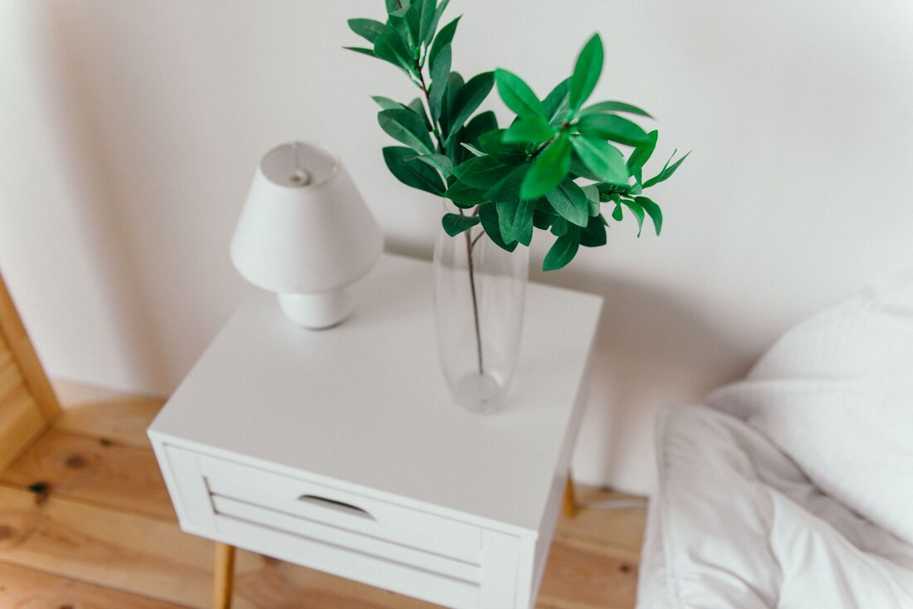
O noptieră pe picioare lasă podeaua liberă și se face la înălțimea exactă a patului.
Foto: Dmitry Zvolskiy · vezi mai multe pe Pexels ↗ Vreau așa — scrie-ne
Dulapul cu corpuri sus până în tavan prinde tot volumul, iar peretele de lemn încălzește camera.
Foto: Max Vakhtbovych · vezi mai multe pe Pexels ↗ Vreau așa — scrie-ne
Negrul mat cere lumină: LED în nișa cu rafturi și lămpi suspendate deasupra insulei.
Foto: Gustavo Galeano Maz · vezi mai multe pe Pexels ↗ Vreau așa — scrie-ne
Ușile glisante din sticlă fumurie pe profil negru ascund dulapul și dublează vizual camera.
Foto: Max Vakhtbovych · vezi mai multe pe Pexels ↗ Vreau așa — scrie-ne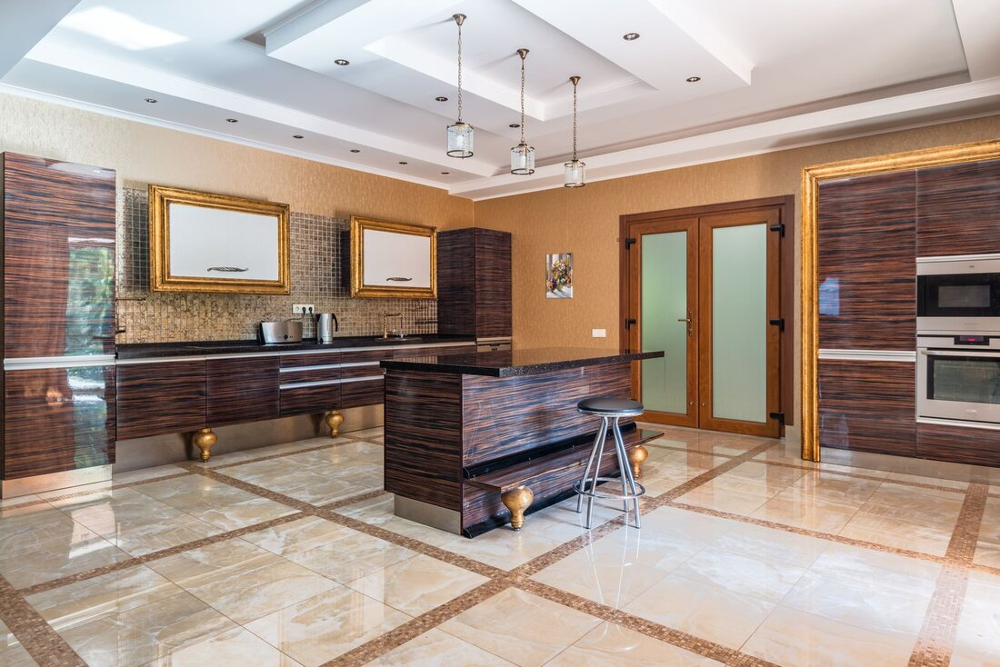
Coloana cu cuptor și microunde stă separat, iar insula cu bar lasă blatul de lucru liber.
Foto: Max Vakhtbovych · vezi mai multe pe Pexels ↗ Vreau așa — scrie-ne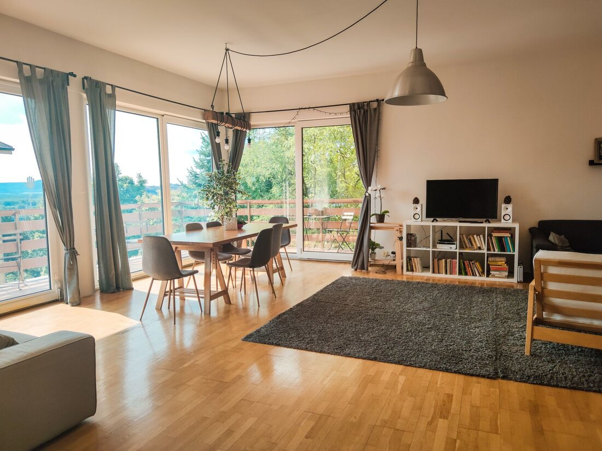
Un raft cu cuburi deschise ține cărțile și televizorul și se face exact pe lățimea peretelui.
Foto: Pham Ngoc Anh · vezi mai multe pe Pexels ↗ Vreau așa — scrie-ne
Insula lungă cu chiuvetă dă blat de lucru generos, iar corpurile înalte adună mult spațiu de depozitare.
Foto: Curtis Adams · vezi mai multe pe Pexels ↗ Vreau așa — scrie-ne
Coloana înaltă cu nișe deschise și blatul jos de lângă masă transformă un perete îngust în depozitare.
Foto: Max Vakhtbovych · vezi mai multe pe Pexels ↗ Vreau așa — scrie-ne
Raftul cu bară și banda LED de pe contur fac utilizabil chiar și un spațiu îngust.
Foto: Max Vakhtbovych · vezi mai multe pe Pexels ↗ Vreau așa — scrie-ne
Cuptoarele și răcitorul de vin intră într-un singur front de coloane, aliniat cu ușile.
Foto: Max Vakhtbovych · vezi mai multe pe Pexels ↗ Vreau așa — scrie-ne
Ușa cu oglindă dublează lumina holului, iar polițele deschise țin lucrurile de zi cu zi.
Foto: Max Vakhtbovych · vezi mai multe pe Pexels ↗ Vreau așa — scrie-ne
Polițele deschise de deasupra comodei TV leagă tot peretele într-o singură piesă.
Foto: Max Vakhtbovych · vezi mai multe pe Pexels ↗ Vreau așa — scrie-ne
Blatul închis la culoare iese în evidență pe fronturile deschise și ascunde mai ușor urmele de folosire.
Foto: Derwin Edwards · vezi mai multe pe Pexels ↗ Vreau așa — scrie-ne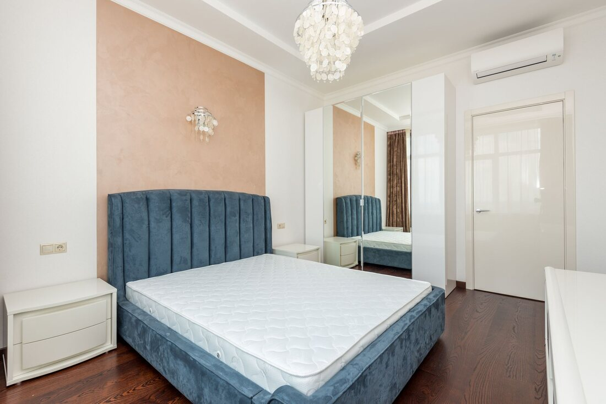
Ușile cu oglindă ale dulapului dublează vizual camera și țin loc de oglindă mare.
Foto: Max Vakhtbovych · vezi mai multe pe Pexels ↗ Vreau așa — scrie-ne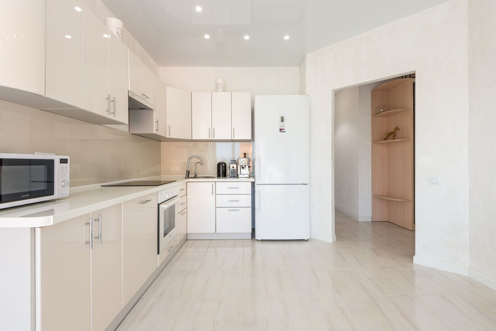
Locul pentru frigiderul de sine stătător se măsoară de la început, ca să intre la centimetru între corpuri.
Foto: Max Vakhtbovych · vezi mai multe pe Pexels ↗ Vreau așa — scrie-ne
Insula în altă culoare devine centrul camerei; frigiderul mare se îmbracă între corpuri până sus.
Foto: Ryan Stephens · vezi mai multe pe Pexels ↗ Vreau așa — scrie-ne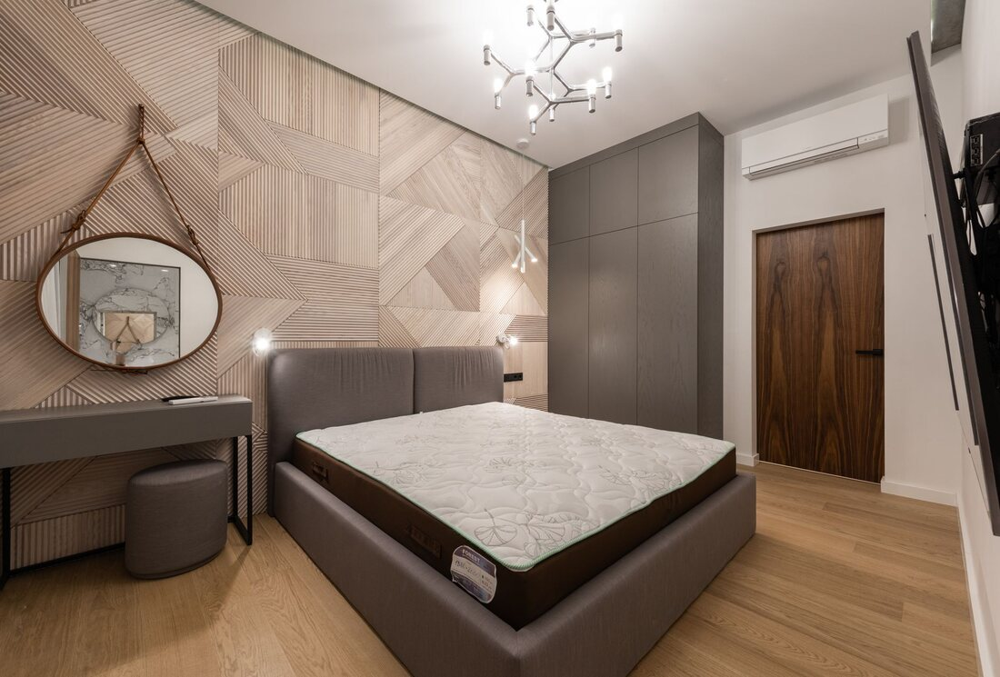
Dulapul gri din colț și consola îngustă de machiaj lasă patul liber în mijlocul camerei.
Foto: Max Vakhtbovych · vezi mai multe pe Pexels ↗ Vreau așa — scrie-ne
Peninsula separă bucătăria de zona de masă, iar nișele din capătul ei țin sticle sau vase.
Foto: Max Vakhtbovych · vezi mai multe pe Pexels ↗ Vreau așa — scrie-ne
Ușile cu mâner-canal păstrează dulapul curat la vedere, iar comoda TV suspendată lasă podeaua liberă.
Foto: mcpeter · vezi mai multe pe Pexels ↗ Vreau așa — scrie-ne
Când bucătăria și livingul împart camera, un dulap cu uși glisante adaugă depozitare fără să ceară loc.
Foto: Max Vakhtbovych · vezi mai multe pe Pexels ↗ Vreau așa — scrie-ne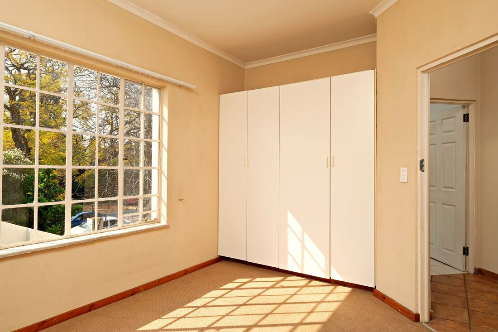
Patru uși albe drepte, fără ornamente: depozitare multă, cu un aspect liniștit.
Foto: Alexander F Ungerer · vezi mai multe pe Pexels ↗ Vreau așa — scrie-ne
Comoda lungă cu sertare de sub televizor adună cablurile și telecomenzile într-un singur loc.
Foto: Max Vakhtbovych · vezi mai multe pe Pexels ↗ Vreau așa — scrie-ne
Fără uși: totul la vedere, iar banda LED de sub polițe luminează direct hainele.
Foto: Max Vakhtbovych · vezi mai multe pe Pexels ↗ Vreau așa — scrie-ne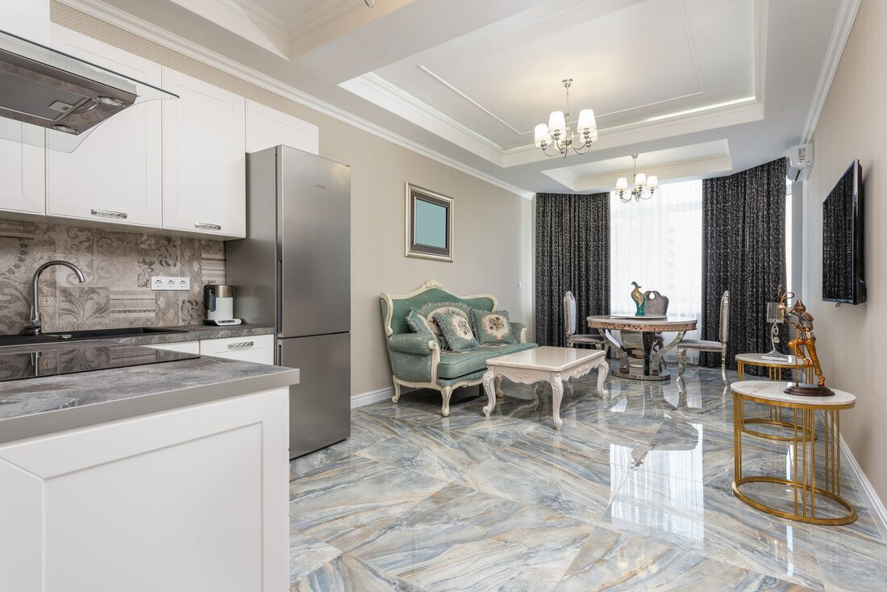
Fronturile albe simple se potrivesc și lângă mobilier clasic, fără să concureze cu livingul.
Foto: Max Vakhtbovych · vezi mai multe pe Pexels ↗ Vreau așa — scrie-ne
Placarea de lemn pe peretele TV ascunde cablurile și dă căldură unui living cu canapea de piele.
Foto: Max Vakhtbovych · vezi mai multe pe Pexels ↗ Vreau așa — scrie-ne
Panourile pe tot peretele țin loc de tăblie de pat și dau camerei un aer unitar.
Foto: Max Vakhtbovych · vezi mai multe pe Pexels ↗ Vreau așa — scrie-neImaginile de inspirație sunt de pe Pexels, cu licență liberă pentru uz comercial. Sub fiecare proiect am pus numele fotografului și linkul către sursă — dacă îți place stilul cuiva, mergi la el și vezi tot ce a publicat.